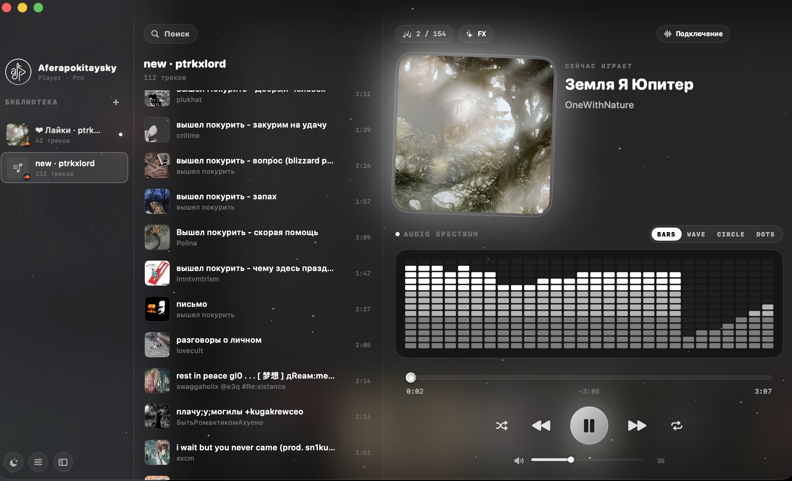

Конструктор макетов
Колонки и блоки плеера можно переставлять прямо в интерфейсе, чтобы оставить только привычный порядок.
Музыкальный плеер, который можно собрать под себя: живой визуализатор, быстрый поиск, SoundCloud и Spotify, темы и перестановка интерфейса без лишней возни.
Не просто темная оболочка, а интерфейс для ежедневного прослушивания: быстро найти, быстро переставить, быстро включить.
Колонки и блоки плеера можно переставлять прямо в интерфейсе, чтобы оставить только привычный порядок.
Командная палитра ищет треки по SoundCloud и Spotify, хранит историю и быстро запускает результат.
Bars, Wave, Circle и Dots реагируют на состояние воспроизведения и поддерживают общую тему интерфейса.
Aferapokitaysky Player сочетает в себе минималистичный стиль macOS и широкие возможности кастомизации. Полный контроль над вашим прослушиванием.
Переставляйте блоки и управляйте внешним видом интерфейса плеера под свои предпочтения.
Spotlight-поиск мгновенно находит треки в SoundCloud и Spotify прямо с клавиатуры.
Наслаждайтесь живой визуализацией с режимами Bars, Wave, Circle и Dots под любой бит.
Чистый и продуманный liquid glass дизайн. Наведите курсор на окно плеера, чтобы ощутить 3D-перспективу.

Плеер полностью оптимизирован для macOS и доступен для скачивания в формате DMG. Версия для Windows находится в разработке.
Да, сборка для Windows (EXE/MSI) готовится и будет доступна для скачивания в ближайшее время.
Скачайте установочный образ DMG, дважды кликните по нему и перетащите иконку Aferapokitaysky Player в папку Applications (Программы).